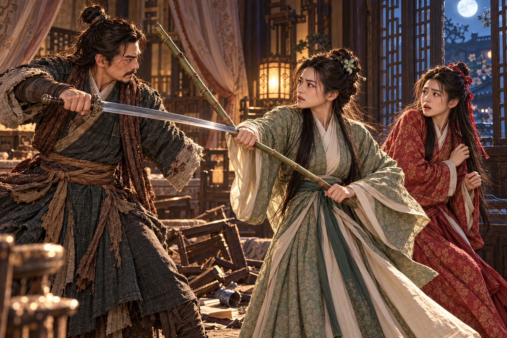

Ketika matahari muncul, terdampar pada tepian berbatu, tubuhnya masih tersangkut kayu hanyut. Air masuk ke mulut ketika ia mencoba bernapas. Ia membatukkannya, lalu berusaha menarik dada keluar dari arus. Pembalut bahu kanannya basah; tusukan di sisi tubuh terasa seperti bara setiap kali ia bergerak.
Desis terdengar di dekat wajahnya. Seekor ular mengangkat kepala dari antara akar. Dani mengangkat tangan kiri, tetapi siku yang semalam menahan seluruh tubuhnya kini gemetar. Ketika kepala ular melenting, bayangan besar melintas di atas kayu.
Cakar menghantam batu. Seekor burung raksasa menjepit ular itu sebelum taringnya mencapai Dani. Ular berbelit pada kaki tebalnya; burung tersebut membentangkan sayap pendek, lalu mengempaskan kepala lawannya ke batu. Dani menahan napas, terlalu lemah untuk menjauh.
Burung itu mencengkeram ular yang sudah tidak bergerak, lalu menoleh kepada Dani. Bulunya cokelat kusam, dengan tonjolan merah di atas kepala; tubuhnya jauh lebih besar daripada keluarga Guo, dengan dada tebal, punggung lebar, dan kaki yang sanggup menyangga bobot raksasanya. Dani tidak pernah melihat makhluk seperti itu. Namun ketika paruhnya mendekat, yang dijepitnya justru kain di punggung Dani, menarik tubuh pemuda itu keluar dari air.
“Kalau engkau mencari bangkai,” kata Dani serak, “engkau baru saja merusak kesempatanmu sendiri.” Burung itu mengeluarkan bunyi rendah. Ia melepaskan kain, merobek bagian perut ular dengan paruh, lalu mengambil kantong kecil berwarna gelap. Dani mengenal empedu, tetapi belum mengerti mengapa benda itu dibawa ke hadapannya.
Burung itu melangkah menuju celah bebatuan sambil membawa empedu. Setelah beberapa langkah ia menoleh dan memekik. Dani memandang sungai di belakangnya. “Engkau hendak membawaku pergi? Aku bahkan belum sanggup berdiri.”
Burung itu kembali dan merendahkan tubuh di sisi kirinya. Dani meletakkan tangan pada punggungnya untuk bangkit. Ketika lututnya goyah, sayap pendek yang tampak buruk itu menahan tubuhnya dengan kekuatan yang mengejutkan. Ia menyelamatkan buntalan ibunya dari kayu, lalu membiarkan burung itu menuntunnya.
“Baiklah, ,” bisik Dani. “Di antara semua yang kutemui kemarin, hanya engkau yang belum menyuruhku menjelaskan kesalahanku.”
Mereka menempuh jalan berbatu menuju sebuah gua. Kondor berhenti setiap kali Dani jatuh berlutut. Setibanya di sana, Dani nyaris tidak sanggup lagi mengangkat kepala. Ia melihat tumpukan batu seperti makam. Di depannya, Kondor meletakkan empedu ular yang tadi diambilnya di tepian sungai.
Bau amis membuatnya hendak berpaling. Kondor mendorongnya pelan dengan paruh. Dani menggigit benda itu; rasa pahit memenuhi lidah sampai ke pangkal tenggorokan. Ia hampir memuntahkannya, tetapi burung itu tetap berdiri menunggu. Akhirnya ia menelan dengan mata terpejam.
Tidak lama kemudian, kehangatan mengalir dari perutnya. Dani mengatur napas menurut pelajaran ; aliran yang semalam kacau mulai dapat dihimpunnya kembali. Ia menekan luka tusukan dengan sisa kain kering dari bagian dalam buntalan, kemudian mempererat pembalut bahu. Darah berangsur berhenti merembes. Tidur datang sebelum ia sempat mengucapkan terima kasih.
Kondor duduk di mulut gua, menghadap jalan tempat mereka datang.
Selama hari-hari berikutnya, Kondor membawa makanan dan dari ular-ular yang diburunya. Dani membalut kembali kedua lukanya dengan kain yang dicuci, menerima pertolongan pahit itu, lalu memusatkan tenaga untuk memulihkan tubuh. Bekas tusukan mulai merapat; bahu kanannya memerlukan waktu lebih lama sebelum dapat menanggung gerakan tanpa kembali berdarah.
Yang sukar ditanggung justru gerakan-gerakan kecil. Ia hendak menyangga mangkuk dengan tangan kanan, hendak menyibak rambut, hendak bertumpu ketika bangkit. Tubuhnya masih mengingat anggota yang telah hilang. Sekali mangkuknya terjatuh, dan Dani menendangnya sampai pecah di dinding.
Kondor menatapnya. menatap pecahan itu, lalu tertawa pendek dengan mata basah.
“Aku dahulu pandai menjahit,” katanya. “Sekarang mengikat kain pun harus memakai gigi. Kalau Bibi melihatku, ia tentu akan duduk di sisiku dan mengerjakan semuanya.”
Pikiran tentang menimbulkan nyeri di dada. Dani membungkuk, menunggu sampai serangan itu lewat. belum melepaskannya. Namun sakitnya tidak lagi sekejam di lembah; racun yang diisapnya dari kedua Wu dan pertolongan empedu telah mengubah pergulatan di dalam tubuhnya. Ia belum mengetahui berapa lama perubahan itu akan menahannya hidup.
Pada hari ketika hitungan delapan belas hari seharusnya habis, Dani duduk di mulut gua sampai matahari tenggelam. Ia masih bernapas. Malam berikutnya pun berlalu. Ia tidak menganggap dirinya sembuh; ia hanya berhenti menghitung sisa umur menurut batas yang ternyata telah terlampaui.
Di dinding gua terdapat tulisan tua. Dani membersihkan lumutnya dengan ujung kain. Nama muncul dari batu, disertai kisah singkat seorang pendekar yang sepanjang hidup mencari lawan sepadan dan akhirnya mengasingkan diri bersama seekor kondor.
Dani memandang makam batu itu. Tidak ada murid berjaga atau pedang berlapis emas. Hanya seekor burung yang tetap datang membawa makanan, seolah orang di bawah batu masih dapat memerlukannya.
“Jadi, engkau telah menemaninya sebelum menemaniku.” Dani berlutut perlahan. “Senior Dugu, aku Dani Moan. Aku datang tanpa permisi dan telah memakan makanan sahabatmu. Jika kelak dapat berjalan lagi, aku akan membersihkan tempat ini sebagai balasannya.”
Ia membungkuk tiga kali. berdiri di dekat makam dan mengeluarkan pekik panjang. Gema itu mengisi gua, sunyi kembali, kemudian terasa lebih sepi daripada sebelumnya.
Setelah luka cukup rapat, Kondor membawanya ke tebing di belakang gua. Di atas sana sebuah pelataran batu menonjol dari dinding curam. Burung itu melompat dari ceruk ke ceruk; cakarnya menghantam batu, sayap pendeknya menahan keseimbangan. Dani mengikuti dengan qinggong, berganti pada kaki dan tangan kiri. Tinggi tebing yang dahulu tampak mustahil terlewati sedikit demi sedikit di bawahnya.
Di pelataran itu terdapat tempat penyimpanan pedang. Bilah tajam, bekas tempat sebuah senjata yang telah dibuang, yang tumpul, dan sisa pedang kayu menunjukkan jalan yang pernah ditempuh pemiliknya. Dani membaca keterangan singkat masing-masing. Semakin tua Dugu, semakin sedikit ia bergantung pada ketajaman besi.
Dani mencoba mengangkat , Pedang Xuantie. Ia telah bersiap terhadap beratnya, tetapi bahu kirinya tetap tertarik turun. Senjata itu tidak mempunyai keindahan . Ujungnya membulat, kedua sisinya tebal, dan beratnya seperti menggenggam sebongkah batu dengan sebuah gagang.
“Dengan benda ini Senior Dugu mengalahkan para pendekar?” Dani memandang Kondor. “Barangkali lawannya sudah kelelahan ketika membantu mengangkatnya.”
Sayap Kondor menyapu ke arah kepalanya.
Dani spontan mengangkat pedang. Benturannya meledak; tumitnya terseret sampai mendekati tepi pelataran. Ia menghunjamkan kaki, memutar pinggang, dan akhirnya menahan dorongan itu. Rasa terkejut mengusir tawanya.
Kondor menyerang lagi. hendak memakai perubahan Pedang , tetapi pedang berat itu terlambat mengikuti pergelangan. Paruh menyambar dadanya. Ia terpaksa menahan dengan bidang bilah, lalu jatuh terduduk karena hentakannya.
“Saudara Kondor, kalau engkau hendak membunuhku, untuk apa obat pahit itu kaubawakan setiap pagi?”
Burung itu tidak meneruskan serangan. Ia mundur beberapa langkah, menunggu Dani berdiri, lalu mengembangkan sayap kembali.
Dani perlahan mengerti. Ia memandang bekas gesekan kakinya, arah sayap, dan letak tubuh Kondor. Burung itu tidak sekadar memukul dengan kekuatan besar. Setiap geraknya memaksa Dani memilih yang benar; tipuan pergelangan tidak akan menahan serangan yang mengguncang seluruh tubuh.
“Engkau pernah berlatih seperti ini bersamanya,” kata Dani. “Dan sekarang engkau hendak mengajariku.”
Ia bangkit. Kali ini ia tidak memulai dengan gerak yang indah. Kedua kakinya menapak, tenaga dihimpun dari pinggang, lalu pedang didorong lurus. Sayap Kondor menyambutnya. Debu beterbangan dari pelataran; Dani masih terdorong, tetapi ia tidak lagi jatuh.
Hari itu mereka turun setelah matahari melewati puncak. Dani membawa dengan tangan kiri yang gemetar. Untuk pertama kali sejak meninggalkan Xiangyang, ia memandang hari esok tanpa hanya membayangkan kematian.
Beberapa pekan berganti menjadi dua bulan. Dani berlatih, memulihkan napas, lalu berlatih kembali; membawa dan menuntunnya menuju lawan yang lebih berat daripada sayapnya sendiri: air deras di antara batu gunung. Ketika Dani hendak berangkat mencari terlalu dini, satu sapuan burung itu masih dapat merobohkannya. Ia terpaksa tinggal sampai tubuhnya sanggup menempuh perjalanan.
Pada mulanya ia memakai seluruh tenaga untuk bertahan di arus. Air menghantam dada dan mendorong pedang ke samping. Setiap kali ia mengerahkan kekuatan melalui bahu saja, senjata itu menyeretnya jatuh. Kondor menariknya kembali dengan cakar pada kain jubah, lalu mendorongnya masuk lagi begitu napasnya pulih.
“Engkau lebih galak daripada Bibiku,” gerutu Dani. “Ia masih mau mendengar alasan sebelum menyuruhku mengulang.”
Kondor memekik. Dani mengusap air dari wajahnya dan tertawa. Tawa itu masih asing di telinganya sendiri.
Ia mulai menyambungkan hal-hal yang dahulu dipelajarinya secara terpisah. menahan dasar tubuh, napas memberi kesinambungan, dan pedang bergerak bersama pinggang. Ketiadaan lengan kanan mengubah keseimbangan, tetapi tidak menghilangkan jalan tenaga dari kedua kakinya. Ia tidak perlu menunggu tangan itu kembali untuk menggerakkan seluruh tubuh.
Sesekali kecerdikannya mendahului kekuatannya. Ia menemukan celah pada sapuan Kondor, mencoba memasukkan tusukan, lalu disapu jatuh karena pedang belum tiba ketika pikirannya sudah tiba. Kekalahan itu membuatnya mendidih. Namun ia kembali, mencoba gerak yang sama dengan langkah lebih pendek, dan kali berikutnya sayap Kondor harus menahan bilahnya.
Pada akhir bulan kedua, hujan gunung memperbesar aliran. Gemuruhnya sampai ke dalam gua. Kondor berdiri di luar, menunggu, sedangkan Dani meraih pedang tanpa diperintah.
Di kaki air terjun, ia menancapkan kedua kaki di celah batu. Air menghantam kepala dan bahunya. Lengan baju kanan yang diikat pendek melekat pada tubuh; tangan kiri menahan gagang. Ia mengangkat bilah perlahan, merasakan tekanan menjalar sampai telapak kaki, lalu membiarkannya lewat sebelum mendorong kembali.
Dorongan pertama membuka tirai air di depannya. Yang kedua memukul arus berbalik ke sisi tebing. Pada dorongan ketiga, berseru; membelah jatuhan air, dan untuk sesaat batu di belakangnya tampak telanjang sebelum seluruh curahan itu runtuh lagi dengan suara menggelegar.
Kondor memekik dari tepi. Dani melompat keluar, menjejak batu licin, lalu berputar ke arah bongkah sebesar kerbau yang menutup sebagian aliran. Ia tidak mencari celah dengan ujung tajam. Seluruh tenaga tubuhnya mengalir mengikuti satu ayunan pendek.
menghantam batu itu.
Bongkah tersebut pecah dengan bunyi seperti guntur. Serpihannya meluncur ke dalam sungai; air menyembur melalui bagian yang terbuka, mengangkat buih tinggi ke kedua tepi. Getaran merambat ke kaki Dani. Untuk sesaat ia tetap berdiri dengan pedang terjulur, hampir tidak mempercayai luas kehancuran di hadapannya.

Kondor tidak mundur. Ia mendekat dan membenturkan sayap pada bidang pedang. Dani menyambutnya. Sekali ini burung besar itu harus menggeser kaki, sedangkan Dani mempertahankan tumpuannya di atas batu basah.
“Saudara Kondor,” katanya terengah, lalu tertawa keras, “engkau harus mencari batu yang lebih besar esok hari!”
Ia ingin memanggil . Nama itu sudah berada di ujung lidah ketika ia teringat tidak ada seorang pun berjubah putih di tepi sungai. Kegembiraannya mereda. Tangan kiri menggenggam pedang yang kini dapat dikendalikannya; tangan kanan tetap tidak ada.
Malamnya Dani kembali membaca bekas tulisan tentang pedang kayu. Ia mencoba sebatang dahan. Benturan pertama dengan batu mematahkannya. Ia duduk memandangi patahan itu lama, kemudian meletakkannya di samping .
“Jalan Senior masih panjang,” katanya di depan makam. “Tetapi aku tidak akan berhenti hanya karena hari ini belum dapat mencapainya.”
Ia membungkuk dengan pedang diletakkan di lantai. Warisan ini harus dibawanya keluar. Di suatu tempat Xiaolongnü mungkin masih mengira ia hendak menikahi Fu; sementara setiap hari yang berlalu membuat kesalahpahaman itu semakin jauh dari jangkauannya.
“Aku harus mencari Bibi,” kata Dani kepada . “Sebelum menuju Zhongnan, ada satu tempat yang hendak kudatangi.”
Burung itu memandang lengan bajunya yang kosong. Dani berpaling. Ia tidak menjelaskan bahwa nama Fu masih dapat menghilangkan ketenangan yang baru dipelajarinya di bawah air terjun.
Mereka meninggalkan lembah pada pagi berikutnya. Kondor menunggu di perbukitan ketika Dani mendekati Xiangyang menjelang malam. Di jalan ia mendengar namanya disebut bersama kata kematian: mengabarkan bahwa pemuda yang kehilangan lengan itu telah ditusuk dan dilemparkannya ke sungai. Laporan tersebut keluar dari perkemahan Mongol, menyebar lewat para pencari dan orang-orang yang lalu-lalang selama dua bulan, sampai dunia persilatan menganggap malam itu sebagai akhir Dani Moan. Dani menarik kerah bajunya, menunggu jalan sepi, lalu memanjat tembok dan bergerak menuju kediaman Guo.
Ia datang untuk menemukan Fu. Selama berada di lembah, berkali-kali ia membayangkan pedang di tangan kirinya berhenti di depan wajah gadis itu. Kadang ia hendak menuntut sebuah lengan; kadang ia hanya ingin Fu melihat dirinya masih hidup. Sekarang, ketika jendela yang dikenalnya tampak, kedua keinginan itu sulit dibedakan.
Dari dalam terdengar suara .
“Dua bulan engkau bersembunyi. Orang-orang membawa kabar mati, dan engkau masih membiarkan ibumu mencarikan tempat untukmu?”
Dani berhenti di dahan dekat jendela. Fu duduk di sisi ranjang, menunduk. Guo Jing berdiri di hadapannya. Luka sang paman telah pulih, tetapi wajahnya tampak lebih tua daripada ketika Dani membawanya keluar dari perkemahan Mongol.
“Ibu menyuruhku pulang,” jawab Fu lirih. “Aku ingin meminta ampun kepada Ayah. Tetapi… kabar Huodu itu belum tentu benar, bukan?”
“Ayah menyuruh orang menyusuri sungai. Tidak ada jasad yang ditemukan.” Guo Jing menatap putrinya. “Setiap kali mereka pulang dengan tangan kosong, Ayah berharap anak itu masih hidup. Harapan itu tidak menghapus apa yang telah kaulakukan.”
Fu mulai menangis. “Ayah masih marah kepadaku?”
Guo Jing menarik napas panjang. Ketika Fu mendekat dan memeluk pinggangnya, tangannya sempat terangkat untuk membelai rambut putrinya. Namun tangan itu berhenti sebelum sampai.
“Sejak kecil aku menjagamu agar engkau tidak menderita,” katanya. “Barangkali karena itu engkau tidak mengetahui betapa sakitnya orang yang kaucelakai. Fu’er, jika hari itu yang kehilangan lengan adalah engkau, apakah Ayah dapat duduk tenang?”
Fu mendongak. Di luar jendela, Dani merasakan genggamannya mengeras pada dahan.
“Dani membohongi kedua kakak Wu,” kata Fu. “Ia memukulku. Aku sangat marah. Aku tidak tahu pedang itu akan—”
“Kalau pedangnya tumpul, apakah perbuatanmu menjadi benar?”
Fu terdiam.
“Ia sakit ketika kauserang. Ayah sudah mendengar semuanya. Engkau menghina gurunya, kemudian menebasnya setelah ia jatuh. Jangan berlindung di balik ketajaman senjata.” Guo Jing menelan napas yang terasa berat. “Ia keluar dari rumah ini tanpa seorang pun mengetahuinya. Bila kabar benar, anak yang telah menyelamatkan ayahmu itu menghadapi musuh dengan darah yang belum berhenti mengalir. Sedangkan engkau pulang dengan kedua tangan utuh!”
Dani menunduk. Ia datang dengan anggapan bahwa di rumah itu orang-orang sudah kembali makan, tidur, dan melupakan darahnya. Mendengar suara sang paman, ia tiba-tiba tidak sanggup terus memegang anggapan tersebut.
membuka lemari dan mengambil . Fu mengenali sarungnya; warna wajahnya lenyap.
“Engkau putriku,” kata Guo Jing. “Aku tidak dapat memutuskan hubungan darah itu. Tetapi aku juga tidak akan memakai namaku untuk melindungimu dari akibat perbuatanmu. Ulurkan lengan kananmu.”
“Ayah!”
Guo Jing menarik pedang. Tangan yang memegangnya bergetar. Ia menatap Fu lama, seakan berharap waktu berbalik sebelum darah pertama tertumpah di rumah mereka.
“Seandainya lenganku dapat menggantikan lengan , Ayah tidak akan menyuruhmu mengulurkannya.” Suaranya pecah. “Memotong tanganmu pun tidak akan menghidupkan orang yang telah mati. Tetapi Ayah tidak sanggup membiarkanmu bersembunyi di balik nama Guo Jing seolah kesalahan ini tidak perlu dibayar!”
Dani nyaris melompat turun. Amarah yang dibawanya mendadak bertubrukan dengan wajah Guo Jing. Ia ingin Fu membayar, tetapi tidak pernah membayangkan ayah gadis itu sendiri akan berdiri demikian pucat, memegang pedang yang sama.
Bilah mulai bergerak. Dari jendela seberang sebuah tongkat menyambar.
Benturan memekakkan telinga. mendarat di antara suami dan putrinya; tongkatnya mengangkat pergelangan Guo Jing, lalu menyapu kaki agar ia harus berganti . Meja di sisi ranjang pecah diterjang ujung sarung. Fu menjerit dan mundur ke dinding.

“Keluar!” seru Huang Rong kepada putrinya. “Lewat jendela!”
Guo Jing memutar pedang, menahan pukulan berikutnya. “Rong’er, engkau masih hendak melindunginya?”
“Ia anak kita!”
“Lalu Dani anak siapa?” Guo Jing berseru. “Karena ayah dan ibunya telah meninggal, bolehkah kita memperlakukannya sesuka hati?”
Tongkat Huang Rong tertahan sesaat. Guo Jing maju; satu hentakan telapaknya mematahkan batang penyangga tirai yang menghalangi jalan. Huang Rong kembali menyilang, memutar tongkat untuk menutup pintu. Ia tidak dapat mengalahkan suaminya dengan tenaga, tetapi ia mengenal langkah dan keengganannya melukai dirinya.
“Kesalahan Fu akan kita tanggung bersama,” kata Huang Rong, napasnya memburu. “Selama jasadnya belum ditemukan, aku akan terus mencari Dani. Jika ia masih hidup, aku sendiri akan berlutut memohon ampun kepadanya. Tetapi jangan tebas anak kita di depan mataku!”
“Dengan apa engkau akan mengembalikan lengannya?”
Huang Rong tidak mempunyai jawaban. Air mata muncul di pelupuknya, tetapi tongkatnya tetap melintang.
Fu memanjat jendela di bawah dahan tempat Dani bersembunyi. Seutas kain merah tersangkut. Gadis itu menariknya dengan tangan kanan, tangan yang dahulu menggenggam . Dani telah menurunkan dari punggung. Jika ia mengulurkannya sekarang, Fu tidak mempunyai tempat berlindung.
Ia melihat wajah gadis itu: pucat, basah, tidak mengetahui siapa yang berada sedekat itu. Dari kamar terdengar memanggil namanya sendiri, suara yang penuh sesal. Dani menahan pedang sampai Fu melewati bawahnya. Ia tidak bergerak.
Aku tidak akan membunuh orang yang sedang lari karena ketakutan, pikirnya. Tetapi aku belum memaafkanmu, .
Di dalam kamar, Huang Rong menurunkan tongkat perlahan. “Jing-gege, belum kembali. Setiap malam aku mendengar tangisnya padahal ia tidak ada. Jangan buat aku melihat darah Fu pula.”
Wajah Guo Jing menegang. “Aku pun ayah Polu. Aku pun ayah Fu. Jangan mengira hanya engkau yang takut kehilangan anak.”
mendekat, mengulurkan tangan ke lengan suaminya seperti hendak meredakan gemetarnya. Guo Jing tidak menepis. Dua jari Huang Rong bergerak cepat di bawah rusuknya; itu membuat tenaga yang sedang dihimpunnya terhenti. Ia terhuyung, dan Huang Rong segera menopangnya ke sisi ranjang.
“Rong’er!” Suara Guo Jing penuh keterkejutan.
Huang Rong tidak berani menatap matanya lama. “Kali ini aku bersalah kepadamu. Aku akan mengantar Fu keluar, lalu mencari Polu dan . Sesudah itu aku kembali menghadapmu.” Ia mengambil tanda perintah dari ikat pinggang suaminya, meletakkan jauh dari ranjang, dan keluar membawa tongkat.
Guo Jing berusaha bangkit. Otot lehernya menegang; ia mulai mengerahkan tenaga untuk membuka totokan. Namun Huang Rong telah melewati halaman. Tidak ada kelakar yang dapat mengembalikan kelembutan kepada kamar itu.
Dani masih berada di atas dahan. Di dalam, Guo Jing duduk seorang diri di antara meja yang pecah dan tirai yang jatuh. Dani ingin memanggilnya, hendak mengatakan bahwa ia masih hidup. Lalu nyeri yang tidak berasal dari luka menahan suaranya. Jika ia masuk, apa yang harus dikatakannya tentang Fu? Apa yang sanggup diberikannya kepada seorang paman yang telah berbuat sejauh itu?
Akhirnya ia menyarungkan kembali ke dalam balutan kain. Malam ini ia belum sanggup pulang. Tetapi ia juga tidak membawa hak untuk menghukum seluruh keluarga atas satu tangan yang menebasnya.
Huang Rong menyusul Fu ke arah gerbang. Dani mengambil jalan lain, kembali ke perbukitan tempat menunggu. Burung itu mengangkat kepala mendengar langkahnya. Dani meletakkan telapak kiri pada lehernya yang kasar dan berdiri tanpa berkata-kata sampai napasnya tenang.
“Kita menuju Zhongnan,” katanya akhirnya. “Aku harus menemukan Bibi.”
Kondor berjalan di sisinya. terasa berat di punggung, tetapi Dani tidak lagi terhuyung karenanya. Ia telah belajar menghancurkan batu besar; malam itu ia juga mengetahui bahwa ada sesuatu dalam dirinya yang tidak akan selesai hanya dengan menghancurkan orang yang dibencinya.
Di depan mereka, jalan pegunungan menghilang ke dalam gelap. Dani melangkah lebih cepat. Ia telah mendengar bagaimana dunia menyebut kematiannya. Jika kabar itu sampai kepada , ia tidak tahu apa yang akan dilakukan perempuan yang pernah memintanya hidup bersama di .